Meus Jogos Favoritos
Essa página contém franquias de jogos que marcaram a minha infância e como as conheci.
Story of Seasons

Introdução
Story of Seasons é uma franquia de jogos do tipo simulador de fazenda desenvolvida e publicada pela Marvelous Inc..
Teve início em 1996 com a publicação de seu primeiro jogo para o SNES e, atualmente, conta com vinte e nove jogos principais e dezesseis spin-offs.
Conheci a franquia assistindo meu pai jogar Harvest Moon: Back to Nature no PS que tínhamos em casa, e foi um dos primeiros jogos que me lembro de ter jogado.
Uma curiosidade sobre a franquia é a de que, quando ela era localizada em outras regiões fora do Japão pela Natsume, carregava o nome Harvest Moon.
Lista de Jogos
Principais
-
Harvest Moon
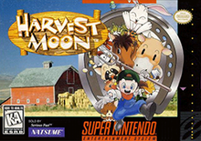
Data de Lançamento: 09/08/1996
Plataforma de Lançamento: SNES
-
Harvest Moon GB

Data de Lançamento: 18/12/1997
Plataforma de Lançamento: Game Boy
-
Harvest Moon 64

Data de Lançamento: 05/02/1999
Plataforma de Lançamento: Nintendo 64
-
Harvest Moon 2 GBC

Data de Lançamento: 06/08/1999
Plataforma de Lançamento: GBC
-
Harvest Moon: Back to Nature

Data de Lançamento: 16/12/1999
Plataforma de Lançamento: PS
-
Harvest Moon 3 GBC
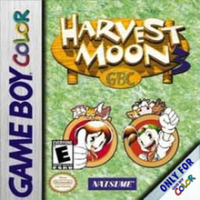
Data de Lançamento: 29/09/2000
Plataforma de Lançamento: GBC
-
Harvest Moon: Back to Nature for Girl
Data de Lançamento: 07/12/2000
Plataforma de Lançamento: PS
-
Harvest Moon: Save the Homeland
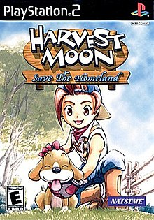
Data de Lançamento: 05/07/2001
Plataforma de Lançamento: PS2
-
Harvest Moon: Friends of Mineral Town

Data de Lançamento: 18/04/2003
Plataforma de Lançamento: GBA
-
Harvest Moon: A Wonderful Life
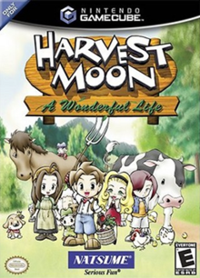
Data de Lançamento: 12/09/2003
Plataforma de Lançamento: GameCube
-
Harvest Moon: More Friends of Mineral Town

Data de Lançamento: 12/12/2003
Plataforma de Lançamento: GBA
-
Harvest Moon: Another Wonderful Life

Data de Lançamento: 08/07/2004
Plataforma de Lançamento: GameCube
-
Harvest Moon: Poem of Happiness
Data de Lançamento: 03/03/2005
Plataforma de Lançamento: GameCube
-
Harvest Moon DS

Data de Lançamento: 17/03/2005
Plataforma de Lançamento: DS
-
Harvest Moon: Magical Melody

Data de Lançamento: 10/11/2005
Plataforma de Lançamento: GameCube
-
Harvest Moon: Boy & Girl
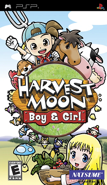
Data de Lançamento: 23/11/2005
Plataforma de Lançamento: PSP
-
Harvest Moon DS Cute

Data de Lançamento: 08/12/2005
Plataforma de Lançamento: DS
-
Harvest Moon DS: Island of Happiness
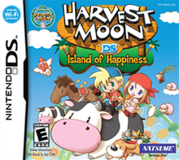
Data de Lançamento: 01/02/2007
Plataforma de Lançamento: DS
-
Harvest Moon: Tree of Tranquility
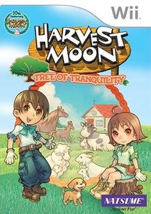
Data de Lançamento: 07/06/2007
Plataforma de Lançamento: Wii
-
Harvest Moon DS: Sunshine Islands
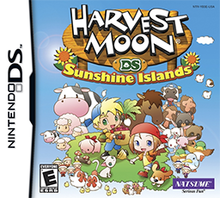
Data de Lançamento: 21/02/2008
Plataforma de Lançamento: DS
-
Harvest Moon: Animal Parade

Data de Lançamento: 30/10/2008
Plataforma de Lançamento: Wii
-
Harvest Moon DS: Grand Bazaar
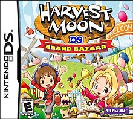
Data de Lançamento: 18/12/2008
Plataforma de Lançamento: DS
-
Harvest Moon: Hero of Leaf Valley

Data de Lançamento: 19/03/2009
Plataforma de Lançamento: PSP
-
Harvest Moon: The Tale of Two Towns
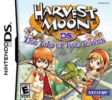
Data de Lançamento: 08/07/2010
Plataforma de Lançamento: DS
-
Harvest Moon 3D: A New Beginning

Data de Lançamento: 23/02/2012
Plataforma de Lançamento: 3DS
-
Story of Seasons
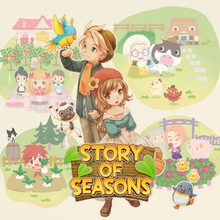
Data de Lançamento: 27/02/2014
Plataforma de Lançamento: 3DS
-
Story of Seasons: Trio of Towns

Data de Lançamento: 23/06/2016
Plataforma de Lançamento: 3DS
-
Story of Seasons: Friends of Mineral Town

Data de Lançamento: 17/10/2019
Plataforma de Lançamento: Switch
-
Story of Seasons: Pioneers of Olive Town

Data de Lançamento: 25/02/2021
Plataforma de Lançamento: Switch
Spin-Offs
-
BS Farm Story

Data de Lançamento: 02/09/1996
Plataforma de Lançamento: SNES Satellaview
-
Innocent Life: A Futuristic Harvest Moon

Data de Lançamento: 27/04/2006
Plataforma de Lançamento: PSP
-
Rune Factory: A Fantasy Harvest Moon

Data de Lançamento: 24/08/2006
Plataforma de Lançamento: DS
-
Rune Factory 2: A Fantasy Harvest Moon

Data de Lançamento: 03/01/2008
Plataforma de Lançamento: DS
-
Rune Factory Frontier

Data de Lançamento: 27/11/2008
Plataforma de Lançamento: Wii
-
Rune Factory 3
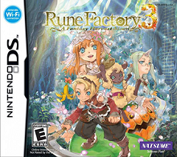
Data de Lançamento: 22/10/2009
Plataforma de Lançamento: DS
-
Rune Factory: Tides of Destiny
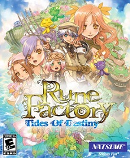
Data de Lançamento: 24/02/2011
Plataforma de Lançamento: Wii, PS3
-
Rune Factory 4
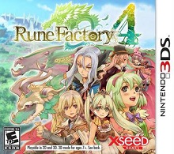
Data de Lançamento: 19/07/2012
Plataforma de Lançamento: 3DS
-
Rune Factory 5
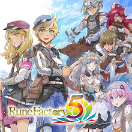
Data de Lançamento: 20/05/2021
Plataforma de Lançamento: Switch
-
Puzzle de Harvest Moon

Data de Lançamento: 06/11/2007
Plataforma de Lançamento: DS
-
Harvest Moon: My Little Shop

Data de Lançamento: 28/04/2009
Plataforma de Lançamento: Wii
-
Harvest Moon: Frantic Farming

Data de Lançamento: 07/08/2009
Plataforma de Lançamento: DS, iOS
-
Minna de Bokujou Monogatari

Data de Lançamento: 25/11/2010
Plataforma de Lançamento: Web browser
-
Hometown Story

Data de Lançamento: 22/10/2013
Plataforma de Lançamento: 3DS
-
Return to PopoloCrois: A Story of Seasons Fairytale

Data de Lançamento: 01/03/2016
Plataforma de Lançamento: 3DS
-
Doraemon: Story of Seasons
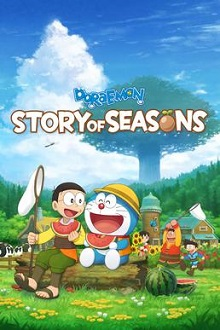
Data de Lançamento: 13/06/2019
Plataforma de Lançamento: Switch
Fire Emblem

Introdução
Fire Emblem é uma franquia de jogos de estratégia por turnos e role-playing desenvolvida pela Intelligent Systems e publicada pela Nintendo.
Teve início em 1990 com a publicação de seu primeiro jogo para o NES e, atualmente, conta com dezesseis jogos principais e quatro spin-offs.
Minha primeira experiência com Fire Emblem foi com o sétimo jogo da franquia, Fire Emblem: The Blazing Blade, o primeiro a ser localizado em inglês, emulando-o pelo meu computador.
Quando eu conheci a franquia, estava a procura pela internet de jogos que combinassem estratégia, pois gostava muito de jogos como Sokoban e Adventures of Lolo, e elementos de RPG, que já havia conhecido em jogos como Chrono Cross e Legend of Legaia.
Lista de Jogos
Principais
-
Fire Emblem: Shadow Dragon and the Blade of Light

Data de Lançamento: 20/04/1990
Plataforma de Lançamento: NES
-
Fire Emblem Gaiden

Data de Lançamento: 14/03/1992
Plataforma de Lançamento: NES
-
Fire Emblem: Mystery of the Emblem
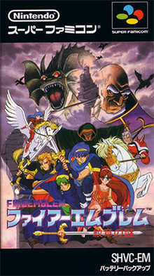
Data de Lançamento: 21/01/1994
Plataforma de Lançamento: SNES
-
Fire Emblem: Genealogy of the Holy War

Data de Lançamento: 14/05/1996
Plataforma de Lançamento: SNES
-
Fire Emblem: Thracia 776

Data de Lançamento: 01/09/1999
Plataforma de Lançamento: SNES
-
Fire Emblem: The Binding Blade
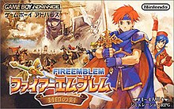
Data de Lançamento: 29/03/2002
Plataforma de Lançamento: GBA
-
Fire Emblem: The Blazing Blade

Data de Lançamento: 25/04/2003
Plataforma de Lançamento: GBA
-
Fire Emblem: The Sacred Stones

Data de Lançamento: 07/10/2004
Plataforma de Lançamento: GBA
-
Fire Emblem: Path of Radiance
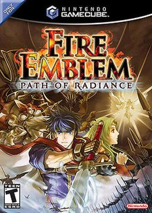
Data de Lançamento: 20/04/2005
Plataforma de Lançamento: GameCube
-
Fire Emblem: Radiant Dawn

Data de Lançamento: 22/02/2007
Plataforma de Lançamento: Wii
-
Fire Emblem: Shadow Dragon

Data de Lançamento: 07/08/2008
Plataforma de Lançamento: DS
-
Fire Emblem: New Mystery of the Emblem

Data de Lançamento: 15/07/2010
Plataforma de Lançamento: DS
-
Fire Emblem Awakening

Data de Lançamento: 19/04/2012
Plataforma de Lançamento: 3DS
-
Fire Emblem Fates
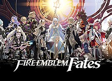
Data de Lançamento: 25/06/2015
Plataforma de Lançamento: 3DS
-
Fire Emblem Echoes: Shadows of Valentia

Data de Lançamento: 20/04/2017
Plataforma de Lançamento: 3DS
-
Fire Emblem: Three Houses

Data de Lançamento: 26/07/2019
Plataforma de Lançamento: Switch
Spin-Offs
-
BS Fire Emblem

Data de Lançamento: 28/09/1997
Plataforma de Lançamento: SNES Satellaview
-
Tokyo Mirage Sessions ♯FE

Data de Lançamento: 26/12/2015
Plataforma de Lançamento: Wii U
-
Fire Emblem Heroes
Data de Lançamento: 02/02/2017
Plataforma de Lançamento: iOS, Android
-
Fire Emblem Warriors
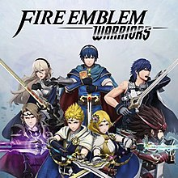
Data de Lançamento: 28/09/2017
Plataforma de Lançamento: Switch
Metroid
Introdução
Metroid é uma franquia de jogos de ação e aventura publicada pela Nintendo.
Teve início em 1986 com a publicação de seu primeiro jogo para o NES e, atualmente, conta com onze jogos principais e três spin-offs.
Minha primeira experiência com Metroid foi com o jogo Super Metroid, o qual inclusive é também um dos jogos favoritos do meu irmão (e de muitos).
Em um certo momento, já tentei fazer "speedrun" desse jogo, ou seja, tentar finalizá-lo no menor tempo possível (um site contendo vídeos de speedruns desse jogo).
Lista de Jogos
Principais
-
Metroid

Data de Lançamento: 06/09/1986
Plataforma de Lançamento: NES
-
Metroid II: Return of Samus

Data de Lançamento: 11/1991
Plataforma de Lançamento: Game Boy
-
Super Metroid
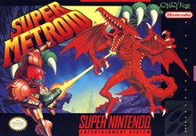
Data de Lançamento: 19/03/1994
Plataforma de Lançamento: SNES
-
Metroid Fusion

Data de Lançamento: 17/11/2002
Plataforma de Lançamento: GBA
-
Metroid: Zero Mission
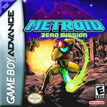
Data de Lançamento: 09/02/2004
Plataforma de Lançamento: GBA
-
Metroid: Other M

Data de Lançamento: 31/08/2010
Plataforma de Lançamento: Wii
-
Metroid: Samus Returns

Data de Lançamento: 15/09/2017
Plataforma de Lançamento: 3DS
-
Metroid Dread
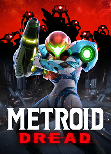
Data de Lançamento: 08/10/2021
Plataforma de Lançamento: Switch
-
Metroid Prime
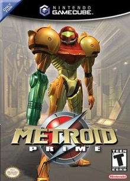
Data de Lançamento: 17/11/2002
Plataforma de Lançamento: GameCube
-
Metroid Prime 2: Echoes
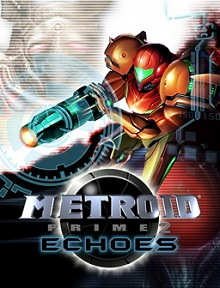
Data de Lançamento: 15/11/2004
Plataforma de Lançamento: GameCube
-
Metroid Prime 3: Corruption

Data de Lançamento: 27/08/2007
Plataforma de Lançamento: Wii
Spin-Offs
-
Metroid Prime Pinball
Data de Lançamento: 24/10/2005
Plataforma de Lançamento: DS
-
Metroid Prime Hunters

Data de Lançamento: 20/03/2006
Plataforma de Lançamento: DS
-
Metroid Prime: Federation Force
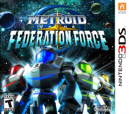
Data de Lançamento: 19/08/2016
Plataforma de Lançamento: 3DS